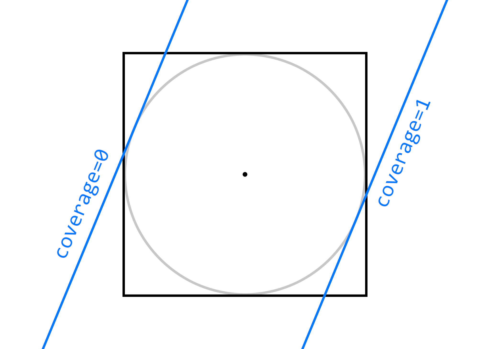
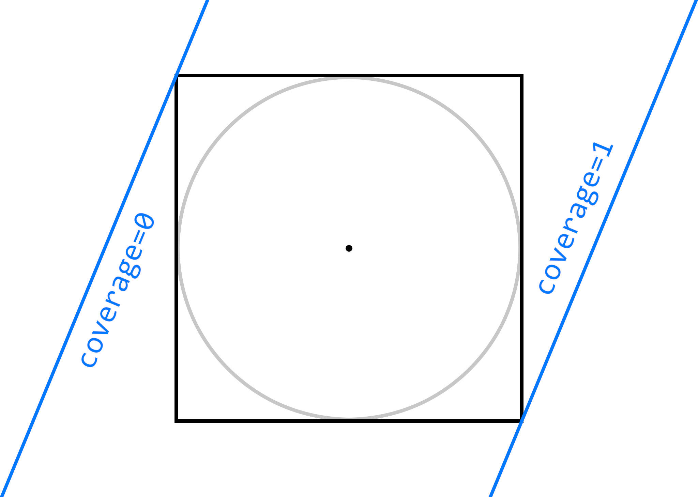
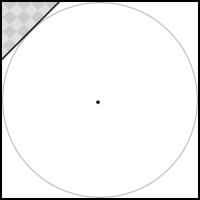
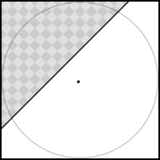
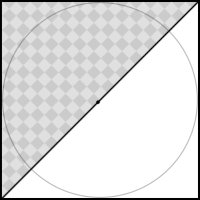
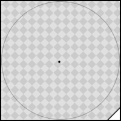
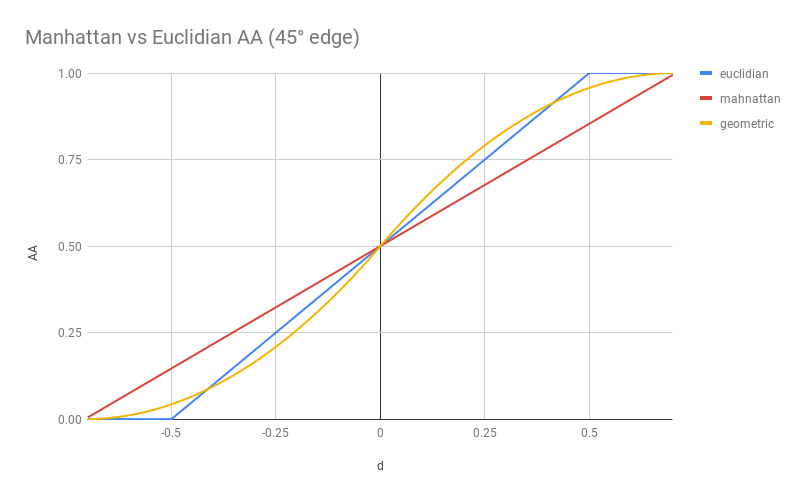

<link rel='stylesheet' type='text/css' href='../slide.css'></link>

<script>
var images = [
    'tiger8_zoom3',
    'tiger8_zoom2',
    'tiger8_zoom4',
    'tiger8_zoom',
    'tiger8',
    'samoa_zoom2',
    'samoa_zoom',
    'samoa',
    'tiger_zoom3',
    'tiger_zoom2',
    'tiger',
    'addarc_zoom2',
    'addarc',
];

var titles = [
    'Manhattan AA (CCPR)',
    'Skia SOFTWARE'
];

var pngs = [
    '_ccpr.png',
    '_sw.png'
];

window.animIdx = 0;

document.write(`
<div class="main">
  <h1>Traditional Antialiasing in Skia-GPU</h1>
    <table width="100%" cellspacing="20px"><tr>
      <td width="40%">
      
      </td>
      <td>
        <ul>
          <li>Coverage ramped linearly from 0..1 at opposite ends of the pixel's inscribed circle.</li>
          <ul>
            <li>An edge that crossed the pixel <i>outside</i> the inscribed circle did not get
fractional coverage.</li>
            <li>Caused small jogs in antialiasing.</li>
          </ul>
          <pre>d = distance(pixel_center, edge);
coverage = saturate(.5 - d);</pre>
          <ul><li>NOTE: <code>d</code> could be an interpolated output from
                the vertex shader.</li></ul>
        </ul>
      </td>
    </tr></table>
  <h1></img>Manhattan Antialiasing</h1>
    <table width="100%" cellspacing="20px"><tr>
      <td width="40%">
      
      </td>
      <td>
        <ul>
          <li>Coverage ramps linearly from 0..1 at opposite pixel <i>corners</i>.</li>
          <ul>
            <li>An edge that crosses the pixel anywhere, regardless of orientation, gets fractional
            coverage.</li>
            <li>100% smooth, continuous antialiasing.</li>
            <li>Potentially blurry; can be sharpened by reshaping the coverage ramp (see below).</li>
          </ul>
          <li>Dubbed "Manhattan" because we can divide by Manhattan length of the edge normal.</li>
          <pre>
d = distance(pixel_center, edge);
manhattan = abs(edge_normal.x) + abs(edge_normal.y);
coverage = saturate(.5 - d/manhattan);</pre>
          <ul><li>NOTE: <code>d/manhattan</code> can be an interpolated output from the vertex
              shader.</li></ul>
        </ul>
      </td>
    </tr></table>
    <h1>Example with a 45&deg; edge</h1>
    <table cellspacing="20px"><tr>
        <td></td>
        <td></td>
        <td></td>
        <td></td>
    </tr><tr>
        <td>
            <pre>d = .5
traditional_aa = 0
manhattan_aa = .15
geometric_coverage = 3%</pre>
        </td><td>
            <pre>d = .133
traditional_aa = .367
manhattan_aa = .4
geometric_coverage = 33%</pre>
        </td><td>
            <pre>d = 0
traditional_aa = .5
manhattan_aa = .5
geometric_coverage = 50%</pre>
        </td><td>
            <pre>d = -.63
traditional_aa = 1
manhattan_aa = .95
geometric_coverage = 99%</pre>
        </td>
    </tr></table>
    <h1>Shape of the Coverage Ramp</h1>
    </img>
    <table style="margin-top:20px"><tr>
        <td width="50%" valign="top">
          <p>Manhattan AA tells us:</p>
          <ul>
            <li>The point at which the first corner in a pixel square crosses the edge
              (coverage&nbsp;==&nbsp;0).</li>
            <li>The point at which the final corner in a pixel square crosses the edge
              (coverage&nbsp==&nbsp;1).</li>
          </ul>
        </td><td valign="top">
          <p>Once these two crucial points are known, we can tweak sharpness by reshaping the
          coverage ramp.</p>
          <ul>
            <li>NOTE: Literal geometric coverage might not be the optimal model.</li>
          </ul>
        </td>
    </tr></table>
    <h1>Results</h1>
    <p>(The coverage ramps in these results have not been reshaped; it's possible they could be sharpened.)</p>
    </div>
`);

for (var i in images) {
    var img = images[i];
    document.write(`
        <table style='text-align:center; border-spacing:50px 1px'><tr>
            <td><h3 id='${img}_txt'>${titles[window.animIdx]}</h3></td>
            <td><h3>${titles[0]}</h3></td>
            <td><h3>${titles[1]}</h3></td>
        </tr><tr>
            <td></td>
            <td></td>
            <td></td>
        </tr><tr>
            <td><h3 style='color:000a13'>${titles[0]}</h3></td>
            <td></td>
            <td></td>
        </tr></table>
    `);
}

window.setInterval(function() {
    window.animIdx = (window.animIdx + 1) % 2;
    for (var i in images) {
        var img = images[i];
        document.getElementById(img + '_txt').innerHTML = titles[window.animIdx];
        document.getElementById(img + '_img').src = img + pngs[window.animIdx];
    }
}, 1000);

</script>
